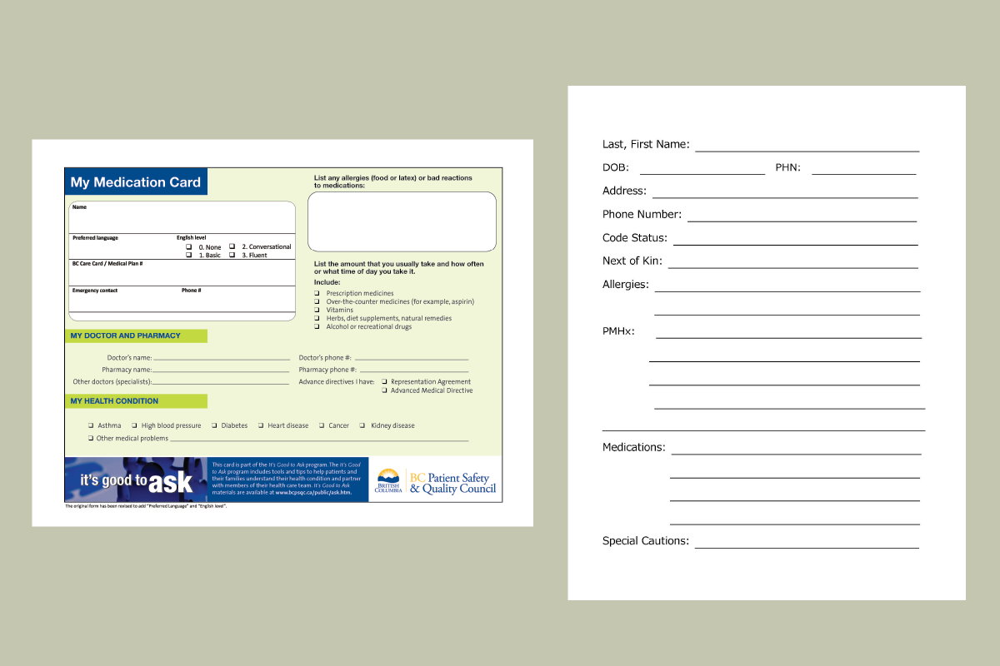
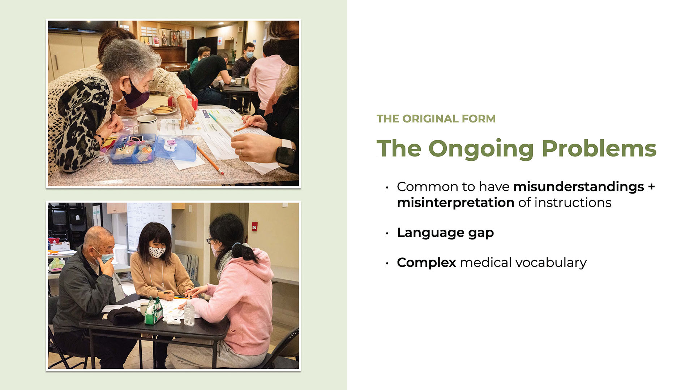
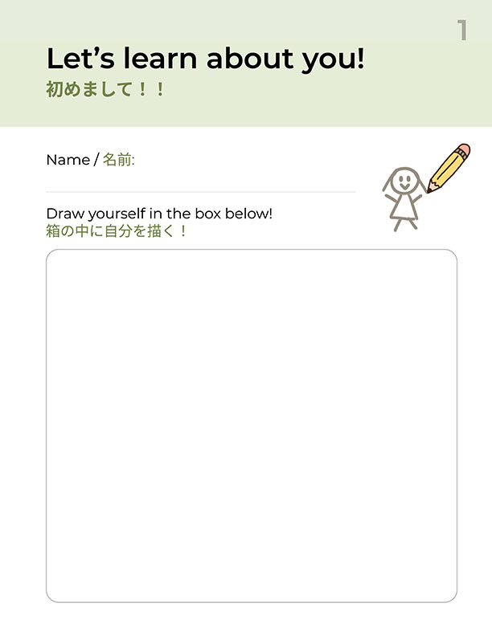
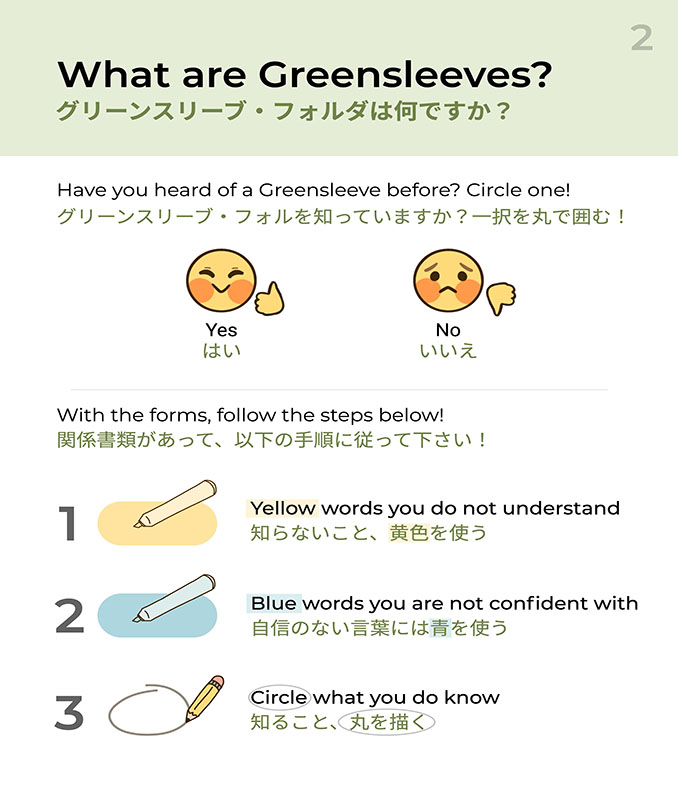
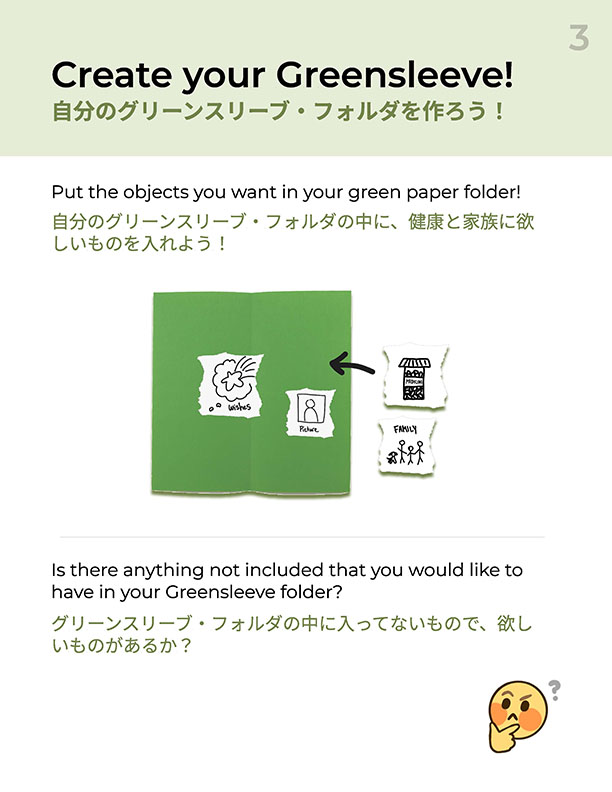
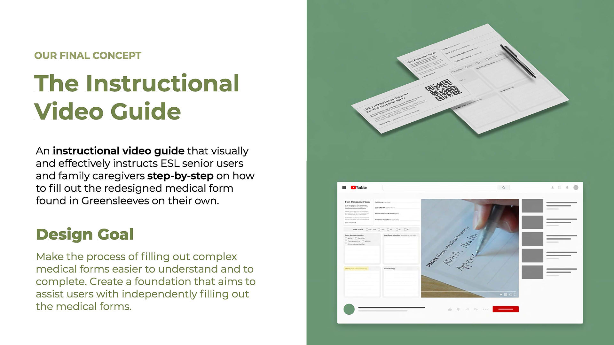
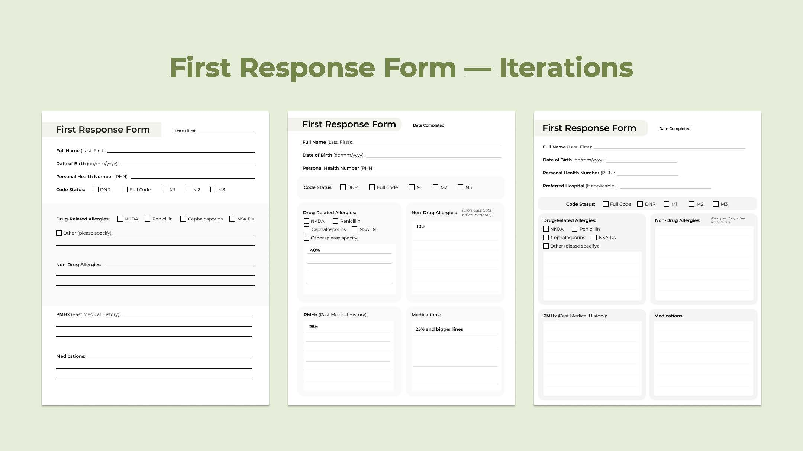
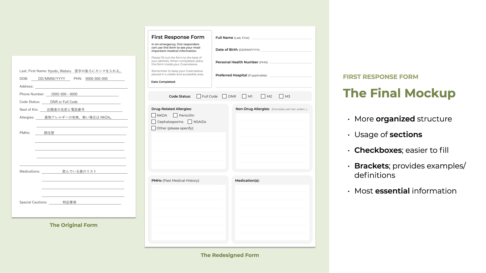
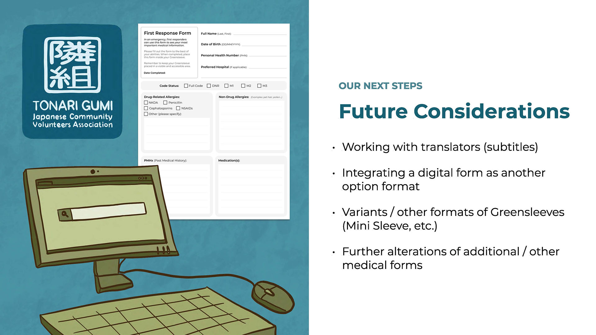

Date
Spring 2022
Role
Service Design
Graphic Design
Tools
Figma
Miro
InDesign
Illustrator
Team
Samantha Bachalo
Shirley Liang
Crystal Wei
Alex King
Tonari Gumi works with Japanese Canadians and limited English speakers through several different programs, services, and events in Metro Vancouver. Our team partnered up with Tonari Gumi for a school ethnographic research project to further research about their organization and their members. Our project focuses on developing a solution to help ESL seniors and limited English speakers with the assistance of completing complex medical forms to place into their Greensleeves; a green plastic envelope that contains a patient’s medical information.
My main role within this project was taking lead on the redesign for the medical forms, as well as assisting in the project's iterations and final concepts. The main focuses for the forms redesign were interactivity, readabilty and hierarchy.
Click here for the in-depth PDF analysis of our project.
The current forms are also designed in a way that is not accommodative of non-English names and information, therefore adding a layer of difficulty for the target audience to communicate their essential information. Additional issues include medical vocabulary being too complex to comprehend, and design aspects of boxes and lines on the forms being too small to read or not allocating enough room to complete. If the target audience isn't able to communicate their medical information in an effective manner, it hinders the medics ability to be able to act in an effective and haste manner in the times of an emergency.

A couple of the complex forms that are currently contained inside the Greensleeve.
How can we make the usage of Greensleeves more comprehensible for ESL senior users and family caregivers so as to effectively communicate medical information to emergency responders?
After collecting data and information to understand exactly who are the different people we are designing for, we began the project by conducting a workshop to ask the people we were designing for on their feedback and input for what they would like to be considered or incorporated. The workshop consisted of a three step process which incorporated bilingual worksheets to collect the information we needed. As we recognized our participants may have poor eyesight as well as difficulties in understanding complex English, we wanted to make these forms easy to fill out and complete. The first worksheet told us about each participant and who they were, the second worksheet allowed each participant to identify what was difficult to understand on the old forms, and the third worksheet allowed them to provide us feedback and allow them to create their ideal medical form of the most important information they would like someone to know in case of an emergency.
After collecting all the data and information from the participants and having further conversations with Tonari Gumi volunteers and medical professionals, our final design iteration consisted of the following solution: a digital instructional video and a physical instructional packet.




The worksheets designed for our workshop with the Tonari Gumi community members.
The concept focuses on redesigning the medical form developed by Tonari Gumi and a Japanese paramedic, in addition to creating an instructional experience that supports the usage of this medical form, which can be placed inside Greensleeves. By offering a packet of instructional material that comes with the Greensleeves, our solution will provide the user with information, definitions, translations and instructions about how to fill out the medical form’s contents.
For the first iteration of packet inclusions, we have created an instructional video that visually and effectively instructs ESL senior users and family caregivers on how to fill out the medical form on their own. Users can access the instructional video through a link or QR code that is accompanied by a physical redesigned form. By putting the instructions in a video and providing the users a link to it, it reduces environmental waste and ensures that the instructions are reasonably accessible for people of all ages in an easy to follow format.
The end goal we wish to achieve with this concept is to make the usage of medical forms within Greensleeves more comprehensible for ESL senior users and family caregivers so that their medical information is communicated in a more effective manner to emergency responders.



Because we are designing for an area that is to be used in cases of medical emergencies, we have to design around what is medically approved, as well as find a balance between the medical jargon and easy comprehensibility.
There may be abbreviations that a paramedic wants us to use, but would be hard for a regular person to understand when they are filling out. We are also limited in our creativity in the sense that we have to focus on the basic functions, such as the foundation and the most important aspects of a medical form, rather than the finer details or pure aesthetics. The forms must also exist physically since they must be placed in a Greensleeve that goes inside of one's household, so a purely-digital form is not possible without being printed. In addition, there is a lot of information that has to be taken in at once; our challenge is creating a balance on how that information is conveyed and communicated.
Finally, since our target audience is seniors, our means of delivering our project would have to be mainly through physical printing or objects due to difficulty with technology (particularly printing documents on their own) which would produce some sort of physical waste. Possible later iterations would be more focused on creating a digital form for efficiency and waste reduction, but that conflicts with the needs of our current target audience at this time.
